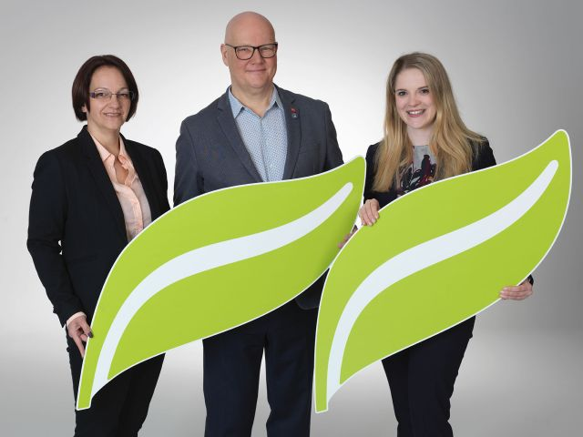
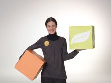
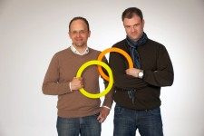
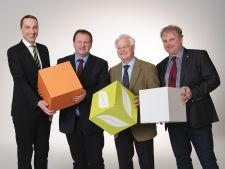

„Umweltfreundliches Handeln ist uns als Gastgeber ein großes Anliegen. Durch die Unterstützung des OekoBusiness Wien war es uns möglich unsere Hotel-Combo in kurzer Zeit mit dem österreichischen Umweltzeichen und dem Ecolabel zu zertifizieren. Folgende Maßnahmen wurden bereits umgesetzt:
Lokale Beschaffung von Waren, um weniger Kraftstoff zu verbrauchen und die Luft sauber zu halten Putzmittel und Toilettenpapier tragen Öko-Gütesiegel.
Alle Kosmetikprodukte sind mit dem europäischen Ecolabel zertifiziert.
Leere Druckerpatronen in den Büros beider Hotels werden einer gemeinnützigen Einrichtung gespendet.
Möglichst wenig Lebensmittelabfälle zu erzeugen und Müll richtig zu trennen
Beim Einkaufen wird auf Bio- und Fairtrade-Qualität geachtet
Auf Plastikflaschen und Getränkedosen verzichten etc.“

„Bereits vor der Teilnahme am ÖkoBusinessPlan Wien war unser Unternehmen stets sehr an Nachhaltigkeit interessiert: Wir trennen seit unserer Gründung bewusst Müll und führen Küchenabfälle, Getränkekartons und Altspeisefett der Wiederverwertung zu. Im Sinne der Müllvermeidung haben wir auch bereits zuvor realistische Portionsgrößen angeboten, die es den Gästen erlauben ihre Mahlzeiten fertig zu essen, sowie - im Fall, dass doch einmal etwas überbleibt – den Gästen die Mitnahme ihrer Speisereste in biologisch abbaubaren Behältern angeboten. Der ÖkoBusinessPlan Wien hat uns bei unseren Bemühungen möglichst wenig Müll anfallen zu lassen weiter unterstützt, in dem gemeinsam mit anderen, gleichgesinnten Gastronomen über weitere mögliche Maßnahmen reflektiert wurde und bei einem Praxistraining diese auch an Hand von Beispielen gezeigt wurden.“

„Durch den ÖkoBusinessPlan Wien konnten wir unser Einsparungspotenzial aufzeigen und unsere Energie-, Betriebs- und Wartungskosten in allen Bereichen unserer Produktion deutlich senken. Bereits beim Bau der Betriebsanlage wurde auf alle relevanten Möglichkeiten zur Energierückgewinnung Rücksicht genommen. Die Etablierung eines perfekt abgestimmten Abfallmanagements und eines Mülltrennungssystems entlastet die Umwelt nachhaltig. Sorgfältiges Wirtschaften im Energiebereich sowie die Verarbeitung regionaler und biologischer Lebensmittel sind wichtige Eckpfeiler unserer Unternehmensphilosophie. Es ist in unserem persönlichen Interesse, mit den vorhandenen Ressourcen so schonend und behutsam wie möglich umzugehen.“

„Im Jahr 2015 wurde das Umweltmanagementsystem (UMS) EMAS und die ISO 14001 in der Agrarmarkt Austria (AMA) aufgebaut und erfolgreich implementiert. Als ausgezeichneter ÖkoBusinessPlan Wien-Betrieb wollen wir Vorbild für andere Unternehmen sein, dass sich ökologisches Engagement rechnet. Es wurden zahlreiche Maßnahmen festgelegt bzw. bereits umgesetzt. Im Bereich der nachhaltigen Beschaffung wurde ein detaillierter Leitfaden mit ökologischen Kriterien erstellt und sukzessive umgesetzt. Der Abfallbereich wurde durch die Erhöhung der Trennschärfe (Einführung und Umsetzung von Abfalltrennmaßnahmen) optimiert. Im Bereich der Stockwerksdrucker/Kopierer wurde auf nachhaltiges Papier mit dem PEFC-Gütesiegel umgestellt. Als weitere wesentliche Verbesserung konnte der Stromverbrauch im Bereich „IT“ durch die Erneuerung und Verringerung der Speichersystemanzahl (Storage) und die Einsparung von rund 50 % der Serverlandschaft sowie durch die sukzessive Modernisierung auf LED-Leuchtquellen reduziert werden.“